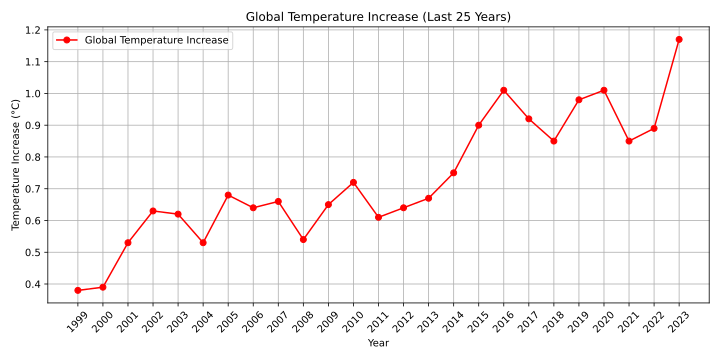
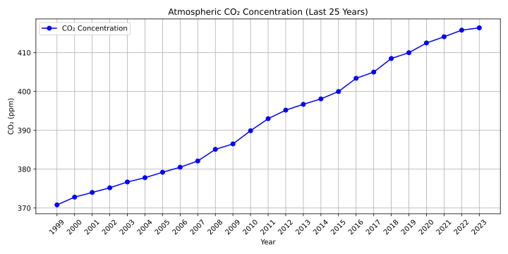

In a world where the sun shines brightly, green forests dance in the wind, and oceans whisper ancient secrets, the Earth is at a critical moment. This is a call to action for all of us, an invitation to explore the journey of greenhouse gas (GHG) emissions and understand their impact on our planet.
The story begins in the Industrial Revolution when humanity discovered the power of fossil fuels. Factories began to operate 24 hours a day, and cities filled with smoke.
As industrialization spread, emissions of carbon dioxide and methane began to rise exponentially.
The forests, the lungs of the planet, began to scream in silence. They absorb CO₂, but the destruction of forests to make way for new constructions and plantations reduced the Earth's ability to heal. Visualization: Comparison of forest areas over the decades. Here, we can see how deforestation impacts air quality and contributes to global warming.
As global temperatures rise, extreme weather events become more frequent. More intense tropical storms, severe droughts, and devastating wildfires begin to affect communities around the world.
The increasing levels of CO₂ and methane create a greenhouse effect, trapping heat in the atmosphere. This leads to a vicious cycle: as the planet warms, ice caps melt, sea levels rise, and ecosystems are pushed to their limits. The once predictable climate now feels erratic and hostile.
Source: Global CO2 - NASA Website
As the consequences of climate change become undeniable, people begin to awaken to the urgency of the situation. Grassroots movements emerge, calling for action to protect the environment and reduce emissions. Communities rally together, demanding changes from governments and corporations. The message spreads: every action counts.
The future is in our hands. By educating, mobilizing, and taking action, each of us can make a difference. Whether it's reducing plastic consumption, adopting sustainable transportation, or supporting environmental policies, together we can transform the narrative.
We are at a turning point. What we choose to do now will determine the legacy we leave for future generations. Join us in this fight, share the story, and be the change you wish to see.
Click here and find out how much CO₂ you emit daily into the environment.
Click Here